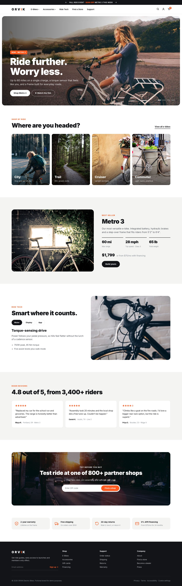
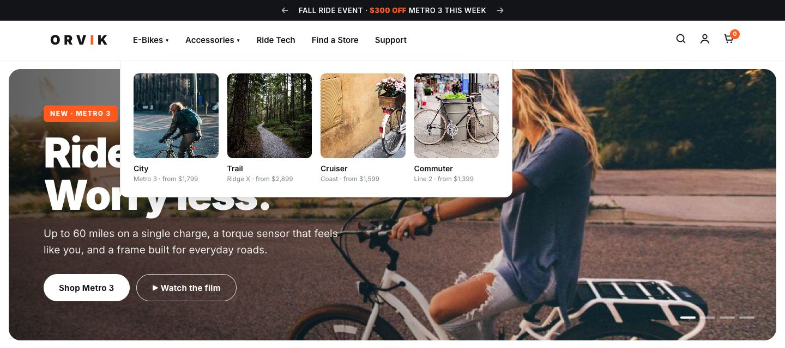
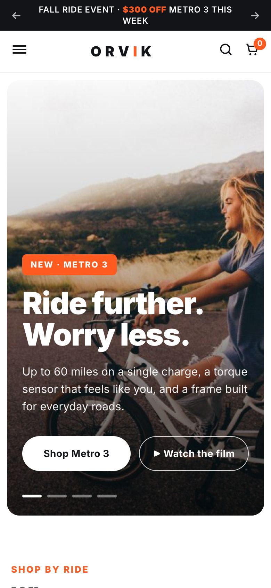
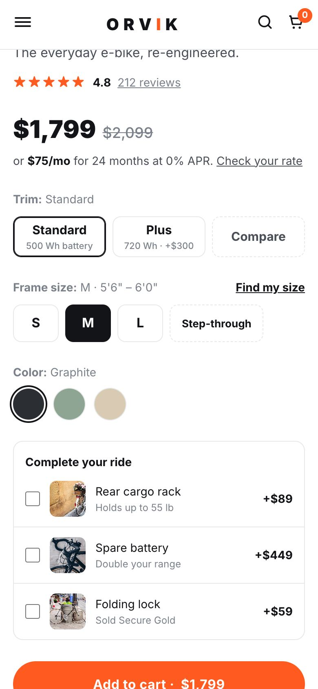

商品详情页
把高客单价商品的购买决策拆成几步
客单价高的商品，用户要看够信息才会下单。截图是选了"Plus 配置 + Sage 颜色 + 货架配件"之后的状态，价格、分期和总价都会实时更新。

- 配置、尺码、颜色分步选择，价格和续航参数跟着配置变化
- 型号对比和尺码工具，帮用户自己做决定
- 配件勾选加购，提高客单价
- 核心参数图标化，加上信任标识
- 分期月供，降低高客单价带来的心理门槛
- 两条购买路径：线上下单，或者找本地经销商

首页的任务是把"感兴趣"的访客带到"去看具体型号"。左侧窗口可以滚动浏览整页：
大菜单直接展示分类图片和起售价，用户不用先点进列表页，就能判断哪一款适合自己。

客单价高的商品，用户要看够信息才会下单。截图是选了"Plus 配置 + Sage 颜色 + 货架配件"之后的状态，价格、分期和总价都会实时更新。


不是把 PC 端简单缩小：首屏文案、按钮尺寸、导航层级都针对手机重新排布。商品页的选项按钮改成适合手指点的尺寸，购物车和搜索固定在顶部。
概念演示站根据项目经验重新设计，ORVIK 为虚构品牌，不含原品牌方的任何素材和经营数据。